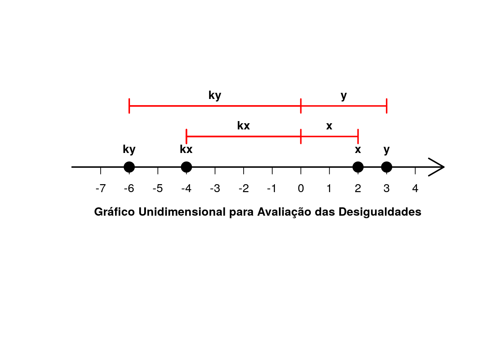

Capítulo 1 Números reais
1.1 Os Números Racionais
Por uma questão de notação admitiremos aqui que, sendo \(r\) um número racional, se \(r \leqslant 0\), dizemos que \(r\) é não positivo. Da mesma forma, se \(r \geqslant 0\), dizemos que \(r\) é não negativo.
Vale acrescentar aqui algumas definições que poderão auxiliar na leitura do livro.
- Abscissa: Trata-se da coordenada de um ponto sobre uma reta.
- Irredutível: Algo que não se pode reduzir. Uma fração é dita irredutível quando está em sua forma mais reduzida possível.
1.2 Os Números Reais
EXEMPLO 4. (Página 6) Suponha \(x \geqslant 0\) e \(y \geqslant 0\). Prove:
- \(x \leqslant y \Rightarrow x^{2} \leqslant y^{2}\).
Resolução:
\[\textrm{e} \ \left.\begin{matrix} 0 \leqslant x \leqslant y\\ 0 \leqslant x \leqslant y \end{matrix}\right\} \overset{(OM)}{\Rightarrow} \ \textrm{e} \ \left.\begin{matrix} xx \leqslant xy \\ xy \leqslant yy \end{matrix}\right\} \overset{(O3)}{\Rightarrow} xx \leqslant xy \leqslant yy \Rightarrow xx \leqslant yy \Rightarrow x^{2} \leqslant y^{2}\]
# Estudo por simulação:
## Semente:
set.seed(sum(utf8ToInt("BGuide")))
## Quantidade de números a serem gerados:
n <- 1000000
## Gera-se aqui 'n' números aleatórios seguindo a distribuição Uniforme de
## parâmetros 'min = 0' e 'max = 1':
x <- runif(n)
## Em seguida geramos mais 'n' números aleatórios seguindo uma distribuição
## Uniforme de parâmetros 'min = x' e 'max = 1'. Isto faz com que todos os
## números armazenados em y[i] sejam maiores do que os armazenados em x[i], com
## 'i' variando de 1 a 'n'. Mas não implica que y[i] seja maior do que x[j] com
## 'j' também variando de 1 a 'n' e 'i != j':
y <- runif(n, min = x)
## Soma a quantidade de verificações onde a afirmação 'x^2 <= y^2' for
## verdadeira:
sum(x^2 <= y^2)## [1] 1000000## Observe que o resultado é 1.000.000, exatamente a quantidade de números
## uniformes no intervalo (0, 1) que foram gerados. Logo para todas as
## simulações obteve-se 'x^2 <= y^2'.
## Obs.: O resultado obtido por simulação não prova a propriedade acima, apenas
## cria evidências a favor dela. A simulação não é necessária aqui pois a
## propriedade pode ser provada analiticamente.
EXEMPLO 9. (Página 10) Resolva a inequação \(\frac{3x-1}{x+2} \geqslant 5\).
Sendo \(x < 2\):
\[\frac{3x-1}{x+2} \geqslant 5 \Leftrightarrow 3x-1 \leqslant 5(x+2).\]
Então o autor pergunta: Por quê?
Sabemos que \(1 < 2\), se multiplicássemos esta expressão por \(-1\) sem alterarmos o sentido da desigualdade teríamos \(-1 < -2\) e sabemos que esta afirmação não é verdadeira. Considerando \(a < 0\), se multiplicarmos uma desigualdade por \(a\) altera-se o sentido da desigualdade pois refletimos estes valores para o outro lado de um eixo com relação a origem a uma taxa de progressão \(\left | a \right |\). Porém, ao realizar este processo a direção de crescimento das unidades permanece a mesma (não é refletida).
# Exemplo gráfico
## O gráfico a seguir tem como objetivo a visualização do que foi dito
## anteriormente. Nele pode-se observar a propriedade 'x <= y ==> ky <= kx'
## quando 'k < 0'.
## Cria um vetor dos valores a serem plotados:
xy <- c(2, 3)
k <- -2
pontos <- c(k*xy, xy)
## Cria gráfico unidimensional:
stripchart(pontos, col = "red", lwd = 3, xlim = c(-8, 4),
main = "Gráfico Unidimensional para Avaliação das Desigualdades")
## Linha da origem:
abline(v = 0, col = "red", lwd = 2)
## Eixo do sistema:
arrows(x0 = -8, y0 = 1, x1 = 4, y1 = 1, lwd = 2)
## Coordenadas da legenda:
x <- c(-6.007753, -4.010723, 1.992396, 2.990910)
y <- rep(1.05, 4)
## Legenda:
text(x, y, labels = c("ky", "kx", "x", "y"), col = "red", lwd = 3)